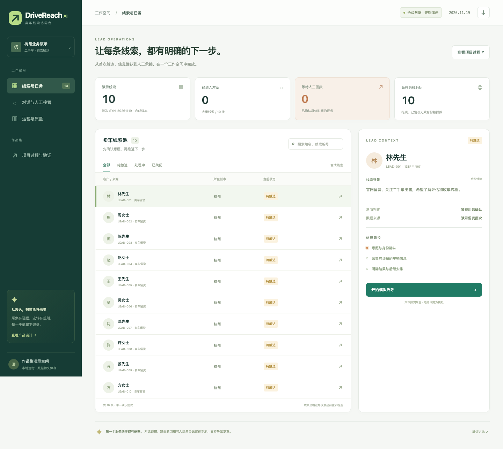

说清楚
车型、年份、里程和出售时间需要理解，也需要在含糊或改口时继续确认。
二手车卖车线索的 AI 对话与人工协同。
从客户表达、业务规则到人工承接与逐案例评测。
卖车首次咨询需要确认车辆信息、出售意愿和接续方式。产品围绕三个问题展开：如何保留可信字段、如何选择转接或回拨、如何确认动作已经完成。
车型、年份、里程和出售时间需要理解，也需要在含糊或改口时继续确认。
当前通话转接、未来人工回拨和预测拨号，各自有不同的状态和成功条件。
每个字段和动作都有证据与事件，失败不会被一句自然语言的“已完成”掩盖。
用规则适配器提取字段与证据，执行层独立校验触达资格、任务状态和写入条件。
“六万多公里”
近似值 → 标记待确认 → 继续追问坐席接受事件才改变承接状态。没有空闲坐席时，明确显示转接失败，再征求回拨意愿。
requested → accepted
失败 → 确认时间与同意 → 新回拨任务“价格没想好”意味着该问题已处理，不意味着已获得价格。资料齐全也不能自动推断客户高意向。
已处理 ≠ 已获知
明确未知、事实完整与出售意愿分别保留三个页面各承担一个明确任务。主流程可现场输入新回答，关键字段可回溯，业务结果在刷新和重启后保留。

实际运行画面 · 进入演示 ↗聚焦卖车首次咨询，明确车辆信息、出售意向、转接和回拨的完成条件。
设计蓝图 / 业务状态 / 验收脚本第一轮领域测试暴露口语数字和拒联任务取消问题；扩展测试继续发现重启、回拨和坐席预留边界。
v0.1 源码快照 / 红测日志近似里程保留不确定性；字段更正保留历史；拒联取消后续触达；SQLite 原子保存动作与事件。
领域与 HTTP 测试 / 重启持久化验证固定划分案例、逐条保留输出。桌面与手机浏览器检查主流程、失败分支、页面状态和控制台。
场景报告 / 浏览器 QA / 最终截图同一批开发场景用于版本回归；留出集单独报告。以下数字从保存的实际 JSON 报告读取。
初始规则快照的实际运行结果
同一开发场景中的规则回归结果
16 个锁定案例；查看后成为已见回归集
本地规则在有限合成案例中的可复现行为、状态流转、证据保存与写入约束。
在线版使用示例线索和模拟线路，任务与反馈保存在浏览器；本地服务支持 SQLite 状态持久化。
从一条线索开始，补充车辆信息、选择转接或确认回拨，再查看字段证据、任务状态和质量记录。
体验当前可运行版本 ↗